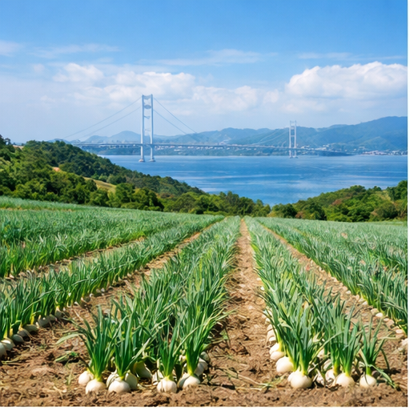
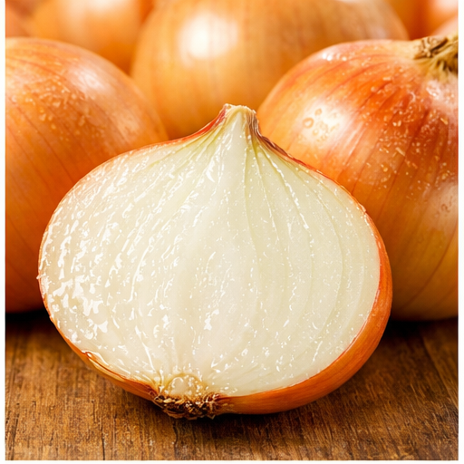
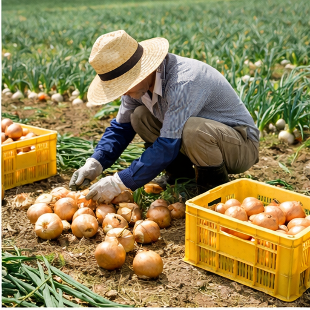
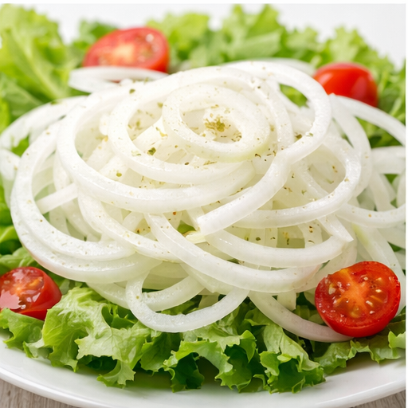

Our Story
淡路島の大地から、
食卓へ。
淡路島は古くから「玉ねぎの聖地」として知られています。温暖な気候と、瀬戸内海から吹く潮風、ミネラル豊富な土壌が、他では生まれない甘みと旨みを玉ねぎに与えます。
私たちは農薬・化学肥料をできる限り減らし、土と向き合いながら育てています。収穫したその日の鮮度をそのままお届けするため、ご注文を受けてから丁寧に箱詰めしています。

Our Story
淡路島は古くから「玉ねぎの聖地」として知られています。温暖な気候と、瀬戸内海から吹く潮風、ミネラル豊富な土壌が、他では生まれない甘みと旨みを玉ねぎに与えます。
私たちは農薬・化学肥料をできる限り減らし、土と向き合いながら育てています。収穫したその日の鮮度をそのままお届けするため、ご注文を受けてから丁寧に箱詰めしています。
Why Our Onion

淡路島の玉ねぎは糖度が高く、生でもそのまま食べられるほどの甘みが特徴。辛みが少なく、サラダや薄切りにも最適です。

農薬・化学肥料を減らし、土づくりから丁寧に。長年培ったノウハウで、毎年安定した品質の玉ねぎを育てています。

ご注文後に箱詰め・発送。スーパーでは味わえない、収穫したての鮮度と旨みをそのままお届けします。
Recipe
淡路島たまねぎは甘みが強く、どんな料理にも合います。ぜひお試しください。

水にさらさなくてもOK。薄切りにしてポン酢やドレッシングをかけるだけ。甘みが際立ちます。

じっくり炒めた玉ねぎのコンソメスープにチーズを乗せてオーブンへ。寒い日に体が温まる一品。
弱火でじっくり炒めると甘みが増してとろとろに。カレーやハンバーグのベースにも最高です。

皮ごとオーブンで焼くだけ。中がとろりと甘くなり、バターと醤油をひとたらしすれば絶品です。
Products
贈り物にも、ご自宅用にも。用途に合わせてお選びください。
Shipping
地域によって送料が異なります。5,000円以上のご注文で全国送料無料です。
| 地域 | 対象都道府県 | 送料（目安） |
|---|---|---|
| 北海道 | 北海道 | ¥1,500 |
| 東北 | 青森・岩手・宮城・秋田・山形・福島 | ¥1,200 |
| 関東・信越 | 茨城・栃木・群馬・埼玉・千葉・東京・神奈川・新潟・長野 | ¥1,000 |
| 中部・東海 | 富山・石川・福井・山梨・岐阜・静岡・愛知・三重 | ¥900 |
| 近畿・中国・四国 | 滋賀・京都・大阪・兵庫・奈良・和歌山・鳥取・島根・岡山・広島・山口・徳島・香川・愛媛・高知 | ¥800 |
| 九州 | 福岡・佐賀・長崎・熊本・大分・宮崎・鹿児島 | ¥1,000 |
| 沖縄 | 沖縄 | ¥1,800 |
5,000円以上のご注文で全国送料無料
送料はヤマト運輸（宅急便）を利用します
上記は目安です。重量・サイズにより変動する場合があります
ご注文後3〜5営業日以内に発送いたします
Order / Contact
ご注文・ご質問はフォームまたはお電話にてお気軽にどうぞ。
ご注文後、3〜5営業日以内に発送いたします。
旬の時期（5月〜8月）は発送が混み合う場合がございます。